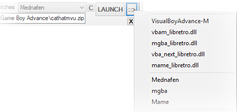

s
k
e
l
e
t
o
n
K
e
y
[TAGLINE]
for Windows
Installer
(recommended)
size:
SHA1 :
This is the compressed skeletonKey executable.
Extract into a skeletonKey directory.
Features
- A comprehensive, easy to use & compact GUI
- Drag & Drop simplicity.
- Global and granular control over libraires of ROMs.
- Deploy a gaming environment to a portable device such as a flash-drive.
- Convert ROMs to a Windows executable
- Download, install and setup hundreds of emulators and many HTPC frontends easily.
To Do:
- Mirrored Link Integration.
- Mirror saves and save-states into a cloud (Dropbox/GDrive/OneDrive)
- Gamepad-driven disk-menus.
- Scraped Metadata Propagation
Disable GUI components for downloads and procedures.
- Ask for your featurenow @ $
Usage
SkeletonKey functions both as a ROM launcher and as a configuration tool for HTPC frontends.
|
ROM - Launcher |
Frontend - Deployment |
|---|
ROMs can be launched quickly in many ways:
- Drag & drop a ROM file to the desktop icon,
- Drag & drop a ROM into the main tab
- Categorically filtered from playlists, ROM directories or search functions.
- Via ROM-Jacket Launchers
- From the command line
As a ROM-Launcher, skeletonKey provides a robust interface needed to automate hundreds of emulators
As a configuration tool, skeletonKey can deploy a ROM-library that meets the expectations of users who desire a means to maintain the integrity of settings and assets indipendently of a frontend or emulator.
Upon initialization, skeletonKey will prompt for locations of an existing ROM library.
Folders within this chosen directory
are identified and users are given the option to rename and or ntfs-link via some fuzzy-matching.
Emulators identified in the specified directory have a set of default preferences which are assigned as nicknames to their compatible, identified systems in your ROM Library
After installing skeletonKey, use the "EMU :=: SYS" tab to import new systems, or download new emulators.
[Settings]
Program Settings
The settings tab contains some options and locations for your systems, emulators, playlists and other directories.
-
Auto-Load Per-Game Settings
SkeletonKey will automatically load any per-game settings previously created and create settings for the currently selected title upon launch if none are detected.
Systems Directory
Systems follow the no-intro naming nomenclature wherever possible.
Jackets and frontends deployed by skeletonKey can be populated with ROMs categorically stored beneath the systems directory.Emulators Directory
By default, all emulators will be installed to the Emulator Directory. Upon assigning a directory to the Emulators Directory, skeletonKey will search subdirectories for previously installed known emulators not currently identified or manually assigned.
Rename Detected
SkeletonKey can try to rename folders in the Systems Directory to the recognized nomenclature supported by skeletonKey (no-intro)
Filter Supported
Enabling this will allow SkeletonKeY to list only recognized folder-names in the Systems Directory.
It is recommended to enable this option.Temp/Cache Directory
By default, the temp/cache directory is set to windows temp folder "%temp%".
History/Playlists
The history file contains a list of the ROMs launched by skeletonKey. Additionally the history file and playlists created by skeletonKey store the emulator or core assigned to it.
The history file and playlists can be read by retroArch and can share these interchangeably.
Append All
skeletonKeY can use retroArch's history file to record its' own launched ROMs.
Users who do not wish to alter retroArch's history file should disable this option.
[MAIN]
The main tab is responsive and will populate options for the currently selected supported emulator. Any existing settings for the currently selected ROM are loaded.
Global-Launch-Menu
-

The Global-Launch-Menu includes:
- a System List dropdown for directories & toggle for playlists
- a ROM selector button
- an EMU dropdown menu
- a"swtiches" toggle
- the editable selection menu containing items in the currently selected playlist or directory
- a "Mini-Mode" toggle button
- a split
LAUNCH >>button
-
System List
The folder/playlist toggle will toggle this dropdown between playlist files and the current system libraries. System Lists contain any folders found in the Systems ROOT directory and any systems which have been appended by the user .This can be filtered to display only detected and created systems.
Right-Click on this dropdown to configure it.
The switches toggle will expose options & arguments fields for emulators. These are pre-packed with many options and arguments, however spaces should be observed when plugging in your own switches.
LAUNCH
The ROM currently in ROM-List will be launched by the emulator/core in the EMU-List.
::>A quick-launch selection set of all assigned presets and known compatible presets will appear in a dropdown menu
This menu can also be accessed via right-clicking on the LAUNCH button.
ROM List
The editable dropdown menu contains a list of all ROMs in the current system/playlist dropdown menu.
A new configuration will be generated in the ROMs' configuration folder if one is not found.
(eg:
\...\skeletonkey\cfg\Microsoft - DOS\msds_dosbox\TMNT\dosbox.conf).EMU List
The EMU list is a core/emulator dropdown which contains a list of all cores, all nicknames for system-associations, and all emuators.
Right-Clicking on this menu enables assignment and configuration.
Drag & Drop
Drag & Drop a ROM into the Main tab and with the Auto-Launch option enabled, skeletonKey will detect the ROM and launch it using the system's associated emulator, or bring forth the menu if undetected/Auto-Launch is disabled.
Search & Find
The "find" button can be found in the lower right hand corner of the tab and will expand the search fields.
skeletonKey can search for ROMs in your "Systems" directories or playlists.
Selecting a title will repopulate the System-List & make it active in the ROM list.
A right-click menu allows for a single ROM to be launched by any installed emulator or it's directory opened by windows explorer. Additionally, multiple files can be selected and added to the playlist editor.
[Emu:=:Sys]
Systems, Emulators, Frontends & Utilities
The EMU:=:SYS tab is used to install and associate skeletonKey's systems to emulator-nicknames and and control the options for them.
This tab may be brought forth automagically when
attempting to launch ROMs from a system which has not yet been assigned to an emulator-nickname.
The Dropdown menu in the lower left hand corner of the tab contains sections of skeletonKey's installable and configurable components for emulators, systems frontends and utilties.
-
FRONTENDS
SkeletonKey's supported and some unsupported frontends can be downloaded and installed here.
Any detected frontends found in skeletonKey's Emulators directory will populate in this section, however the selectable frontends can be identified manaully by dragging and dropping the executable to the selection box, or by using the file-selection dialog.
-
Visual C++
Many emulators require these runtimes
DirectX
Required by many emulators.
XBox360 Drivers
This installs the XBox 360 Joystick drivers from Microsoft. These are needed for Windows Vista and 7.
SCP Wrapper for Dualshock Joysticks
The SCP Wrapper is a driver for bluetooth Sony Dualshock joysticks.
This is the most reliable and easiest way for DS3/4 users to use their joysticks in Windows 7/8x-10.
DS4Windows
DS4Windows is a Sony DualShock 4 driver for windows. It is installed however the configuration of this driver is left to the user.
Display Changer
This is a robust, command-line driven, preset-supporting display manager
This tool works well with RoM-Jacket launchers.
WinCDEmu
This tool emulates a physical disc-drive.
Configuration is left to the user.Virtual CloneDrive
This tool emulates a physical disc-drive.
Configuration is left to the user.
Joy2Key
Configuration is left to the user. Not fully integrated.
Daemon Tools: Consider alternatives.
For systems windowsXP->windows 8.x, skeletonKey can automatically install this program through the command-line which will NOT install the included toolbar or any additional software. Windows 10 users who need Daemon Tools should download and install it separately.
The Daemon Tools program may be needed by the SSF Sega Saturn emulator, the UNZ FM-Towns emulator and any emulator which cannot directly read cd/dvd image files. Mounting disc images with Daemon Tools is desireable for users who wish to switch disks reliably or have disc-images in formats unreadable by an emulator.
!!!!IMPORTANT!!!!
Open the Daemon Tools program.
If you do not have a SCSI drive in the list, add a SCSI drive.
Right click on the new drive icon.
select Device Paramaters
Uncheck Auto insert notification
-
OBTAINING EMULATORS
Emulators installed through skeletonKey are automatically added to the identified emulators.
Emulators which were not automatically detected, in locations outside the scope of your selected Emulators directory or have been externally installed after skeletonKey's detection can be added by SELECTing the emulator's name from the list of Emulators in the EMU:=:SYS tab and dragging and dropping the exe into the selection BOX or selecting it through a file-selection dialog box.
The Emulators dropdown in the EMU:=:SYS tab allows emulators to be assigned to their compatible systems individually by giving that emulator priority.
Additionally, all emulators can be set to allow skeletonKey to store and load settings for each game on a global level.BIOS FILES
The EMU:SYS Tab can be used to identify BIOS files for emulators.
Switch to the Emulators dropdown. Drag and drop BIOS file/s you wish to install. Identified BIOS files will be moved to their default names and locations.
The BIOS files can be re-indexed for any newly installed and identified emulators by clicking the ''AUTO'' button.
UNIDENTIFIED EMULATORS
Any emulator or system can be added to skeletonKey
Adding a unique emulator to skeletonKey's index is achieved through a custom nickname.
Select the System dropdown in the EMU:SYS tab and select the system you wish to associate your emulator with.
In the lower-center column a list will appear containg emulator nicknames associated with the system. If none are listed, assign any nickname by selecting the dropdown above it and press the [+] button beside it, then Select any of them and in the right hand column the properties should appear.
Change the name/options to suit your emulator and use BROWSE button to select the exe.
Click save to index the nicknamed emulator and it should appear as an populated option when launching the system's ROMs.
-
Systems can be renamed by right-clicking on the upper right hand corner dropdown menu when selecting a system.
UNIDENTIFIED SYSTEMS
If, for some reason skeletonKey is unable to automatically identify your system, the EMU-SYS tab's system dropdown will allow you to assign the directory/s to the system through drag and drop or a directory selection browser.
Your unique system can be added by selecting the System dropdown on the EMU:SYS Tab.
Select any system on the left side and in the upper-right hand corner a [+] button will appear. Clicking on this will expand the fields needed to add a custom system.
Customizing & Configuration
-
Systems are initially detected and defined in part by file-extensions exclusive to the system. Because an emulator may have multiple system-assocations, a unique "system identifier" nickname can be created to define exclusive paramaters.
Skeletonkey can detect and assign emulators or a designated retroArch core to a system/s, however it may be desireable to create and configure systems and associations manually. A unique system-identifier or "nickname" can be created to create custom systems and associated emulator-presets.
A system may have multiple emulators assigned which populate the quick-launch/right-click buttons in the global-menu. Right clicking on the System and emu/core dropdowns in the global-menu will bring up menus to quickly configure or associate systems and individual ROMs with emulators and cores.
-options & "/arguments.[ext]"
Options, arguments, quotes, ROM-paths and the extension can be adjusted to suit an emulator's needs.
-
Spaces are observed for options, arguments and command-lines.
The < character must be escaped or it will be converted to a space.
[CUSTMOPT]&[CUSTMARG]are special tags assigned to MAME and other emulators which allow skeletonKey to detect and automate the passing of overriding-options and arguments at runtime via the "switches" checkbox in the Global-Launch-Menu (this is generally reserved for MAME and other multi-system emulators which use zip-contents to determine command-line parameters.)!!!!Enabling the "switches" override will deactivate preset options such as auto-system and ROM-type detection!!!!
Many MAME systems and several supported emulators options and arguments are available as presets for custom options & arguments.
Per-Game Configurations:
SkeletonKey can retain emulator settings for each game (configuration files, save-states, battery-saves/nvram) under supported emulators. Any changes that are made during gameplay will be saved.
-
Operational Details:
SkeletonKey copies and moves these configuration files back and forth between the emulator's folder and the per-game configuration folder before and after the emulator runs.
Configuration files are stored inside a folder of the ROM's name. A folder for each system can be located in the skeletonKey installation folder under the "cfg" directory. EG:
\...\skeletonKey\cfg\System - Name\emu_nickname\ROM Title\config.iniFor retroArch, per-game settings are stored in:
\retroarch\config\core name\ROM Title.cfgROMs dropped to the desktop icon which are not identified as belonging exclusively to a core/emulator will bring up a menu allowing users to quickly select a core/emulaor preset.
[Joysticks]
Joystick Options
Keyboard-Mappers
Features such as rewind/fast-forward and save-state saving/loading are assigned to keyboard shortcuts and button-combinations to trigger these keyboard-shortcuts are preset for many emulators..
RoM-Jacket libraries require a keyboard-remapper for a seamless HTPC gaming frontend experience.
Xpadder
Xpadder is a very reliable and enhanced keyboard remapper. Presets are ubiquitous and abundant and skeletonKey has hundreds for many emulators ready to go for xinput devices.
Antimicro
default.
Antimicro is open source, extremely versitile and the preferred keyboard remapper.
-
Return Profile
Frontends may require a unique joystick profile to properly function. This profile is loaded when returning from a game.
Keyboard
The emulator's default assigned keys are used wherever possible. Functional hotkeys are assigned to triggered button sequences. (eg: holding the back-button while holding down a trigger will enable the joystick's hotkey buttons
Blank
Causes an empty profile to be created for each game so changes made to the keymapper are saved for the currently running title.
If a return profile is enabled .)*
Joy
This is the default option for skeletonKey and creates a profile with only Emulator functionality.
Functional hotkeys are assigned to triggered button sequences. (eg: holding the back-button while holding down L trigger will enable the joystick's hotkey buttons
[Playlists]
Each frontend has a proprietary playlist format, however skeletonkey can convert between emulationStation playlists.
Drag and Drop ROMs to dynamically add files to playlists.
.Playlist Creation
The Playlist Tab contains options for searching within zip files, re-ordering, and downloading art-assets.
-
The left side of the Playlists tab contains a directory dropdown to select ROMs from detected systems, however ROMs can be dragged and dropped to add them to the selection list.
Select and add files from the list to the Playlist on the right side of the tab.Each item added to the playlist contains the name of the ROM, the path of the ROM, the crc hash of the ROM, the core/emulator name, path assignment, & the name of the playlist.
The core/emulator dropdown is assigned to the selected items when they are added to the playlist.
RetroArch's Per-Game Configuration Files
A template config file can be specified for the retroArch's per-game configuration files, otherwise current skeletonKey settings are used.
Playlist Options
Right-Clicking in the current Playlist will allow selected items to change the core/emulator assignment for selected items.
EmulationStation
SkeletonKey can create and edit gamelist.xml files which can be to used cull ROM directories and display custom playlists. The existing es_systems.cfg will be loaded and inherited systems' directories will become available. Several options exist to populate gamelist.xml files with artwork and ROM metadata.
-
Like emulationStation's es_systems.cfg, emulationStation gamelists are xml files which contain standard metadata tags. Absolute paths to assets such as images and video files are accepted, however relative paths are also accepted, making the entire frontend portable across platforms (*nix/apple/windows). Assets can be arranged & named uniquely, however skeletonKey propagates assets to an emulationStation deployment which follows a local-layout.
- Box-Art files: ~/downloaded_images/[ROM_TITLE]-image.png
- Thumbnail images: ~/downloaded_images/[ROM_TITLE]-thumb.png
- Marquee images: ~/downloaded_images/[ROM_TITLE]-marquee.png
- Video snaps: ~/downloaded_images/[ROM_TITLE]-video.mp4
RetroFE
SkeletonKey can create and edit include/exclude files which can be to used cull ROM directories and display custom playlists.
-
RetroFE's playlist (collections) are very versitile and can contain many sub-collections.
Playlist Database
The playlist database is a cache containing all files in all playlists with their corresponding crc32 value.
[DAT:=:Repo]
The DAT:=:Repo tab contains a DAT sorting tool.
SkeletonKey has databases for current No-Intro, Redump, TOSEC and MAME/MESS ROMs.
Drag & Drop is supported.
-
DAT Repo Options
If you have obtained ROMS or ROM-sets which are known (catalogued) you can use the DAT-REPO Tab to identify and add them to your library via drag and drop files or file/folder selection.
All subdirectories are traversed.
Files and Folders will be parsed and matched against the hash databases added on the left side.
Identified ROMs are placed in the Systems Folder in the machine's subdirectory. If no corresponding supported system is identified, the name of the DAT is used.
MAME/MESS systems are supported, however MAME Arcade ROMs should not be sorted and are not currently identified.Your ROMs and BIOS files
ROMs and BIOS files come in many forms and skeletonKey can identify many automatically, however several sites on the internet host a multitude of free and open source ROMs developed for hundreds of popular consoles and computers.
If you have obtained open source / HOME-Brew ROMs or BIOS files you should consider cataloging these seperately within skeletonKey.
[Frontends]
The Frontends tab contains configuration options for many different cabinet and couch-gaming frontends.
Typically, a frontend will have an emluator assigned to a list of extensions for ROMs in a given directory. ROM-Jackets and Mirrored-Links are integrated.
The right-click menu may be useful for users wishing to scrape artwork and create playlists.
Media
Asset-Management is a primary component of skeletonKey, prioritizing a title-local storage-system (ROM-Jackets) to deploy artwork.
SkeletonKey has a repository of photographic icons, full-HD images and large logos for hundreds of console, computer, arcade and hand-held systems. Game-assets and metadata such as box-art, banners, backgrounds, and videos are sourced from a multitude of databases to deploy several frontends.
-
Media Options
Selecting "Systems" in the Media interface will enable icons, logos, backdrops, videos and other media to be downloaded for selected systems. Alternatively, sets of these items can be downloaded. Themes for these items can be selected using the "Artwork Theme" dropdown.
Selecting "Jackets" in the Media interface will enable items to be downloaded for the selected ROM-Jackets.
Selecting "ROMs" in the Media interface will enable ROM-paths to be defined for supported systems.
Mirrored Links
Mirrored Links are Windows shortcuts for ROM-Jacket launchers.
Leveraging Windows shortcuts allows for easy customization of frontends. As these files can be moved, copied and deleted without affecting launchers or ROM-Jackets, creating custom playlists is as easy as navigating Windows Explorer.
Mirrored Links Menu Options
-
Each Mirrored file can be assigned an icon found
EmulationStation
EmulationStation is a cross-platform frontend that has metadata, boxart and video-snap capabilities.
EmulationStation Menu Options
-
SkeletonKey can load existing configuration files (es_systems.cfg), gamelist files (gamelist.xml) to add, remove, edit and reorder games and systems.
The Paradigm: EmulationStation automatically adds any ROMs found in a directory to its database, however skeletonkey can edit and create gamelist.xml playlist-files to explicitly parse.
Pegasus
Pegasus is a very fast and capable cross-platform frontend with metadata, boxart and video-snap capabilities.
Pegasus Menu Options
-
Pegasus has the unusual ability to import and integrate Steam, GoG and EmulationStation artwork and playlists.
RetroFE
RetroFE is a robust, very advanced and versitile, cross-platform frontend with a deep and complex theming system.
RetroFE Menu Options
-
A healthy community is actively developing themes available through the interface.
RetroFE automatically adds any ROMs found in a directory to its database.
-
↕ In Development Simpletouch FE
AttractMode
Hyperspin
KODI/XBMC
-
Rom Collection Browser
-
Advanced Emulator Launcher
-
The Internet Archive Game Launcher
-
[RoM-Jackets]
Jacketizing Options
Overview
RoM-Jackets are folders named with the title of the ROM or ROMs, any individual settings they may have for emulators, artwork, assets and a launcher to maintain files indipendently from other titles for any given system or emulator.
Subdirectories for common emulator files such as save-states, battery/memory-saves, screenshots, manuals, and videos are created for each jacket.
It is advantageous to create RoM-Jackets for libraries where:
- Many emulators may be used for a single system
- ROMs require an emulator to deviate from conventional settings
- Settings must be maintained between sessions
- Data, assets or other reference material is localized to a title.
-

Each jacket's batch-script-launcher copies its emulator-configuration files to the emulator directory prior to launching and any changes made to the emulator during gameplay are copied back to the jacket after exiting the emulator.
For those interested in developing for the RoM-Jacket spec, a few principles should be observed:
Content and artwork such as box-art, fan-art, logos, xml/nfo information, videos and other data not exclusive to any frontend or emulator should reside in the root of the jacket.
Titles which contain many files and folders (DOS Titles) should be placed inside a subdirectory of the jacket.
Launchers should be executable natively by the operating system, make no changes to the system environment and any augmenting behavior beyond the emulator should be disabled unless specifically detected
(ie: the launcher should require no user interaction irrespective of any errors the script may encounter).
Detailed guidelines forthcoming...
Systems
When a system is loaded into the Jacket tab, only the ROMs and Jackets contained within the Systems List directory will populate and can be filtered into the list on the left side of the tab. Settings in the Jacket tab can be saved for each system, however (in the main menu tab) Each system has a default emulator associated with it which will populate with previously slected options or a configuraiton which is designed to be compatible with a very low-spec PC.
Jackets
Jackets are created for ROMs using the title or file-name of ROMs.
Consolidate vs. Individuate
ROM-Jackets are individuated by default.
Consolidate ( )[]
This will consolidate ROMs containing the same base-name, grouping each ROMs regional counterparts and multi-disc ROMs together into a single jacket.
The
base-name is the ROM's filename without any text in parenthesis or brackets.
-
eg: region, disk-number, rom-revision, & any other superflous information is pruned to the game title.
System - Name/
├── Game Title/
│ └── Game Title(USA)[version].rom
│ └── Game Title (JAPAN)[v-2].rom
│ └── Game Title (Disk B).rom
│ └── Game Title (1 of 2)].rom
│ └── Game Title (PAL).romEffectively, this will help eliminate the need to scroll through many different versions of games in a library and will help wrangle multi-disc games. This is the preferred method of folder-generation for users wishing to tame their library and generate friendly-names for their frontend. Launchers created for each consolidated jacket will be named with the base-name and the first alphabetical or [!] ROM will be launched by default.
Individuate
This will simply jacketize each ROM using the name of the file without the extension.
-
System - Name/
├── Game Title (USA)[v-1]/
│ └── Game Title (USA)[v-1].rom
├── Game Title (USA)[v-1.01]/
│ └── Game Title (USA)[v-1.01].rom
├── Game Title (USA)[v-1.11]/
│ └── Game Title (USA)[v-1.11].rom
├── Game Title (EUR)[b]/
│ └── Game Title (EUR)[b].rom
The abundance of releases a title may have seen throughout the world is multiplied by versions the developer released and again multiplied by ROM-dumps. Subsequently, many ROM-collections and system-libraries are simply too large and unwieldy for practical purposes.
In the interest of bringing forth functional libraries it may be desireable to consolidate each title without regard for region or version.
Sub-directories
Several sub-directories to house assets are automatically created for each jacket. Custom subdirectories can also be created.
Extracting Compressed Archives
Compressed Archives may be found within a system's directory and can be extracted into a jacket:
Before: Each archive is extracted prior to any jacket is created. Extracted files are not jacketized.
After: Each archive is jacketized and then extracted into the jacket.
After archives are extracted they can be stored in skeletonKey's tmp directory, deleted, or kept in the jacket.
Launcher Options
The default settings for each emulator are designed for low-powered specification settings, however many consoles offer a variety of settings which you may change when configuring a console individually.
-
Unless explicitly specified at creation-time, the launcher will launch the first alphabetically named ROM in the Jacket.
Drag'n'drop and the command-line may also be used to specify/override the default ROM
>"C:\Games\console\System - Name\Game\Game(name).bat" "Z:\NetworkDrive\Sample\ROM.bin"
PER-GAME
Each ROM retains all unique emulator configuration files.
A Per-Exe option will deploy supported emulators to each ROM-Jacket. This may be desirable for libraries which depend on a wide variability of emulator versions and this is ideal for users who prefer an isolated environment for each ROM.
-
Paradigm:
All settings, quick-saves, save-files & snapshots for the emulator are saved in the ROM-directory.
The ROM's configuration for the emulator is copied to the proper location upon execution of the launcher.
It should be noted that skeletonKey's Launcher settings have their own set of per-game settings which operate indipendently from RoM-Jackets (even when using the same ROM file).
Caveats:
Some consoles use the same emulator and these consoles should use either Per-Game or Global settings (not both).
GLOBAL
All games using the assigned emulator have configurations and settings governed and maintained by the emulator.
-
↕ Global Details Paradigm:
All settings, quick-saves, save-files & snapshots for the emulator are saved in locations set by the emulator in its default state and any changes made to a game's settings in the console's set will be respected by all games using the global option.
This method may be preferrable for users deploying an emulator for each jacket or who wish homogenize a libraries' settings.
Pre-Command / Post-Command
Local/Absolute
The Absolute option enables selecting a file via a file dialog box to be run.
The Local option enables any file (including a file not currently available via a dialog box) to be designated.
-
Applications can be designated to run both before the emulator is launched and after the emulator exits. An option exists to allow the launcher to wait for the command to complete until proceeding, or continue to execute immedietlely after it is launched.
Command line options can be set for any command. Additionally, keywords can be entered which will be parsed by the launcher at runtime. These include:
[ROMPATH]: This will designate the directory path of the ROM.
[ROMF]: This will designate the ROM filename.
[ROM]: This will designate the name of the ROM file without the extention. (useful for MAME)
[EMUL]: This will designate the directory path of the emulator.
[EMUZ]: This will designate the emulator execuatble.Paradigm: Adding pre/post commands is intuitive, however it is possible to add a command inbetween commands after a set has already been assigned. To do this, select the command which will preceed your new command and then press the add-command button
(+).
-
Similar to "Pre-Command / Post-Command" these are commands which run before the emulator launches and after the emulator exits, however these commands execute before the "Pre-Commands / Post-Commands" respectively. You may enter any windows batch-script commands in these fields and likewise, keywords will be parsed.
Emulators Presets
Each supported system has one or more emulators preconfigured for them. The default emulator will automatically be assigned with compatible settings, however any program can be assigned to any system.
-
The Paradigm:
Launchers are simply batch files that run an emulator with the ROM using the command-line interface.
A supported frontend can use RoM-Jacket's BatchScriptLauncher program to control the frontend and execute the launcher.
Emulator Config Files
These fields pre-populate with the currently selected emulator's preset commands. These commands are designed to maintain the Jacket's assets and will typically copy files back and forth between the Jacket and the emulator's directory.
BSL - Batch-Script-Launcher
The BSL can override settings defined by ROM-Jacket launchers and provides a convenient way to enable custom tools to accomodate new HTPC frontends. The BSL will execute the ROM-Jacket launcher while assisting the visibility and state of other assets.
-
BSL.exe is used as the "emulator" where ".bat" or ".lnk" is the extension for any ROM-Jacket library.
[Utilities]
Executables
Creating an executable is a feature unique to skeletonKey where files such as ROMs, an emulator and special configuration files are compiled into a portable executable. Choosing more than one ROM will cause the executable
to bring up a selection list which should be navigatable via player 1's joystick or a keyboard.
-
These executables may be suitable for predefined hardware configurations, netplay clients and other deployments.
Selecting an emulator preset will download the emulator and extract it to the
...skeletonKey\executable\emudirectoryAdd ROMs to your executable by dragging and dropping ROM files to the list on the left. Alternatively, you may use the "Add" button which will allow you to select them via skeletonKey's file-browser. ROM files are copied to the
...skeletonKey\executable\romsdirectory.Enabling the keymapper will download and extract antimicro into the
...skeletonKey\executable\antimicrodirectory.3 profiles (Player1.amgp, Player2.amgp & Select.amgp) are included in the
...skeletonKey\executabledirectory.Select.amgp is loaded before the emulator to enable ROM selection with the directional pad if more than one ROM is included.
All files found in the
...skeletonKey\executabledirectory will be included in the executable. VIDEO:
VIDEO:
Portable Mode
Skeletonkey can be run from a thumbdrive or other portable drive. Many users may desire to transfer an existing skeletonKey installation to a portable drive and the portable utility should facilitate the conifiguration migration.
-
Migration options for the portable utility include localization of items to the drive for playlists and simple search & replace are updated to reflect the new portable skeletonKey location.
Typically, a skeletonkey installation is copied to a removable drive. The PortableUtil.exe file should then be run from the portable device when first starting skeletonKey on a new computer or if the drive letter of the portable device has changed.
Forking
A GUI deployment tool is available for users who wish to publish a skeletonKey. SKey-Deploy.exe can be used to build, maintain and deploy a github source-code versioning project, website and binaries from almost any windows computer with internet access. You must have a github account and create a token.
-
Forking skeletonkey is made simple using the Skey-Deploy executable.
All the required tools such as Git& NSIS can be quickly downloaded and setup automatically to create a devlopment environment.All the tools used to develop skeletonKey are open-source and developers interested in forking the project should read the guidelines and restrictions outlined in the Readme.md file included with the project.
Command-Line
An emulator-preset can be specified to override any default association from the command-line.
SkeletonKey launched from the command line without the -run= option functions identically to drag'n drop.
-
example:
...nkey> skeletonKey.exe -run=NickName "C:\Library\Console Name\Rom Name\rom file.rom"**Nicknames must not contain spaces**
SkeletonKey accepts the option
-run=followed by the nickname of the emulator preset followed by the path to the ROM. Any options specified by the preset are respected.
Options to reset and initialize skeletonKey:
SkeletonKey can be completely initialized by simply deleting all files but the skeletonKey.exe file
-clearrj will reset the ROM-Jacket system-setup preferences and queue
-clearcfg will reset the per-game settings for all skeletonkey launcher presets :: (not ROM-Jackets)
-clearset will reset the skeletonkey program settings
-clearexe will reset emulator executable settings
-clearscrape will delete scraped art and assets
adding a !q to the end of your clear command will override and assume yes on all deletion queries.
example:
...nkey> skeletonKey.exe -clearscrape!q
The Skey-Deploy utility accepts the following:
-reset command to reset the while keeping credentials for github.
-gituser= USERNAME your git username (must be the first argument).
-gitpass= PASSWORD your git password (must be the 2nd argument).
-gittoken= TOKEN-STRING your git authentication token (must be the 3rd argument).
-
Copy Cfg
Similar to the portable utility, this allows you to propagate settings from one file throughout an entire console's library.
If a launcher is selected (.bat) Skeletonkey can propagate the file throughout a console's library and update or replace all other launchers.
Any file can be propagated (eg: an xpadder profile) and subdirectories are supported.
Cloud
This menu allows you to backup your save files and save-states into a cloud. Google Drive, Microsoft OneDrive and Dropbox will be automatically detected.
This is ideal for users who want to share saves or play from multiple computers.
FAQs
Question: Android, Linux & MacOS?
Answer: eh... It works under wine, but pretty much windows only.
Question: Can I install emulators en-masse?
Answer: If you are in need of multiple emulators, consider installing the mednafen, retroarch, or bizhawk emulators.
Question: How do I get games?
Answer: Developers of skeletonKeY are working ahk they possibly can to enable and facilitate the ease of access to integrated repositories
Question: I'm having trouble with a feature. It's a bug?
Answer: Create an issue on Github.com and I'll respond or